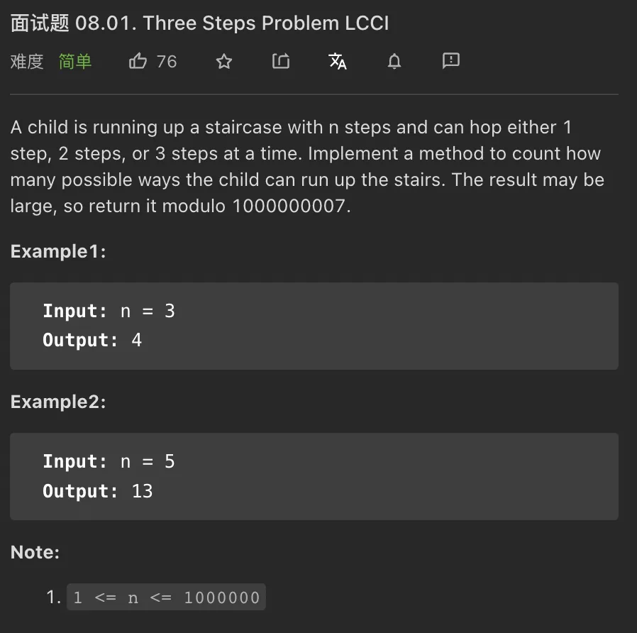
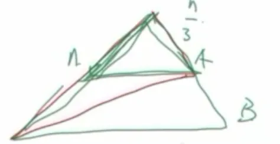

面试题 08.01. Three Steps Problem LCCI
Question

✍🏽 My Solution
🧠 Thought Process
- Why did I choose this particular implementation?
- 第一步
- 走一個台階，剩下(n-1)個台階
- 走兩個台階，剩下(n-2)個台階
- 走三個台階，剩下(n-3)個台階
- 所以推論遞推公式為 f(n) = f(n-1)+f(n-2)+f(n-3)
- 找終止條件（最小子問題推倒方式）
- n=0（不用考慮，因為邊界條件最小值是1）
- n=1，f(1) = 1
- n=2，f(2) = 2
- n=3，f(3) = 4，因為f(0)不知道值是什麼，所以還是要先設定預設值
- 第一步
Solution #1 [非遞歸實現]
执行用时：24 ms, 在所有 Java 提交中击败了44.70%的用户
内存消耗：45.4 MB, 在所有 Java 提交中击败了23.30%的用户
class Solution {
private int mod = 1000000007;
public int waysToStep(int n) {
if (n == 1) return 1;
if (n == 2) return 2;
if (n == 3) return 4;
int[] dp = new int[n+1];
dp[1] = 1;
dp[2] = 2;
dp[3] = 4;
for (int i = 4; i <= n; i++) {
dp[i] = ((dp[i-1]+dp[i-2]) % mod + dp[i-3]) % mod;
}
return dp[n];
}
}
Explanation (in my words)
- How does their solution work?
- 只維護數組中的前三個元素，在求出第四個元素後，數組中的第一個元素出隊，後三個元素分別前移一個單位
- What is the space/time complexity of their solution?
- time: O(n) 最多100萬次的For循環，所以很快
- space: O(n) 只有dp數組的空間
Solution #1 [非遞歸實現+優化]
执行用时：19 ms, 在所有 Java 提交中击败了63.48%的用户
内存消耗：38.2 MB, 在所有 Java 提交中击败了74.07%的用户
class Solution {
public int waysToStep(int n) {
if (n == 1) return 1;
if (n == 2) return 2;
if (n == 3) return 4;
int a = 1;
int b = 2;
int c = 4;
int d = 0;
for (int i = 4; i <= n; i++) {
d = ((c+b)%1000000007 + a) % 1000000007;
a = b;
b = c;
c = d;
}
return d;
}
}
Explanation (in my words)
-
How does their solution work?
-
只需要用3個變量紀錄前3個值就行，不需要數組
空間複雜度優化
-
-
What is the space/time complexity of their solution?
- time: O(n)
- space: O(1)
Solution #2 [遞歸+備忘錄]
执行用时：88 ms, 在所有 Java 提交中击败了5.16%的用户
内存消耗：145 MB, 在所有 Java 提交中击败了5.00%的用户
class Solution {
private int mod = 1000000007;
private int[] memo = new int[1000001];
public int waysToStep(int n) {
if (n == 1 || n == 2) return n;
if (n == 3) return 4;
if (memo[n] != 0) return memo[n];
memo[n] = ((waysToStep(n-1) + waysToStep(n-2)) % mod + waysToStep(n-3)) % mod;
return memo[n];
}
}
Explanation (in my words)
- How does their solution work?
- 這是考察對編程語言的基本功，不是考察算法
- 雖然AC，但是執行時間效率很差，數據規模 n 到了 1000000次的函數調用，因為入棧和出棧也需要時間，故有可能會超時
- 空間複雜度消耗也很大，因為壓棧100萬次的棧幀
- What is the space/time complexity of their solution?
- time: O(n)
- space: O(1)
Solution #3 [Recursion]
超出時間限制
class Solution {
private int mod = 1000000007;
public int waysToStep(int n) {
if (n == 1 || n == 2) return n;
if (n == 3) return 4;
return ((waysToStep(n-1) + waysToStep(n-2))% mod + waysToStep(n-3)) % mod;
}
}
Explanation (in my words)
-
How does their solution work?
- 三叉樹，節點個數 k 範圍為 A < k < B

- 用滿三叉樹推倒公式
- 總節點個數為 $1+3 + 3^2 +3^3 + ... + 3^(h-1) = 3^h-1$
-
帶入A跟B滿三叉樹，求出節點個數 k 為 $3^(n/3)-1 < k < 3^n$
帶進 A 滿三叉樹為 $3^(n/3)-1$
帶進 B 滿三叉樹為 $3^n$
-
What is the space/time complexity of their solution?
- time : $3^(n/3)-1 < k < 3^n$ （指數級）
- space: $O(n)$